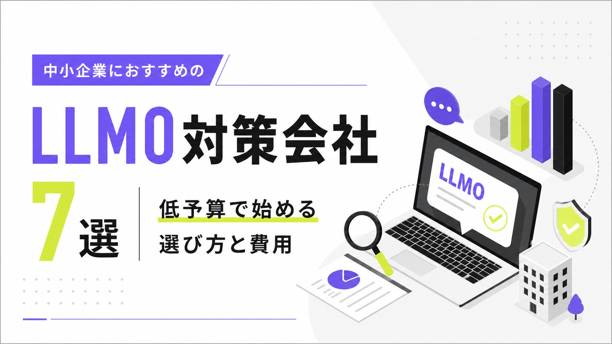
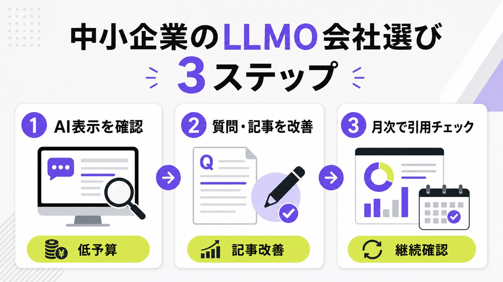
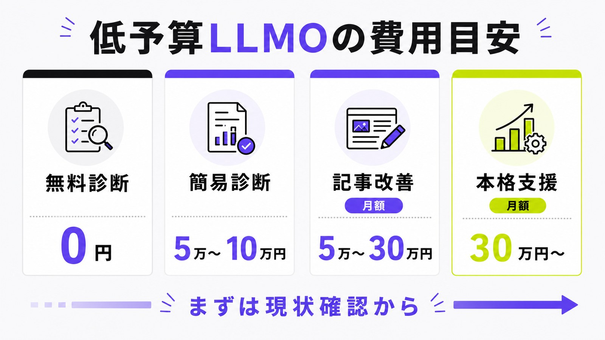
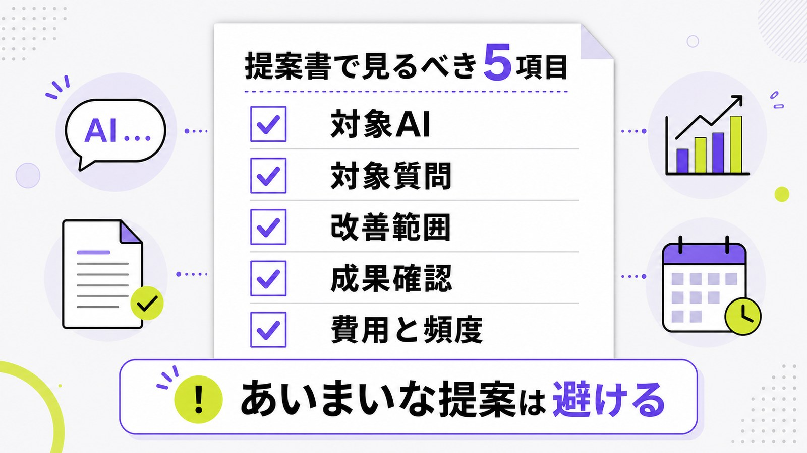

中小企業におすすめのLLMO対策会社7選｜低予算で始める選び方と費用

中小企業がLLMO対策会社を選ぶときは、大手向けの高額コンサルを前提にする必要はありません。まず見るべきなのは、AI回答で自社がどう表示されているかを確認し、既存記事やFAQを直すところから始められる会社かどうかです。
LLMO対策は、ChatGPT、Gemini、Perplexity、Google AI OverviewsなどのAI回答で、自社名やサービス情報が理解・引用されやすい状態を作る施策です。SEOと別物として考えるより、SEOで作った記事やサービスページをAIにも伝わりやすく整える取り組みとして見るとわかりやすいです。
この記事では、中小企業におすすめしやすいLLMO対策会社7社を、費用感、向いている企業、支援範囲で比較します。LLMOの基本から知りたい方は、先にLLMO対策とは？SEOとの違いと実践方法も参考にしてください。
この記事は、予算だけでなく「社内に担当者が少ない」「記事制作まで任せたい」「小さく始めたい」といった中小企業の進め方を軸にした比較です。料金の安さを中心に見たい場合は、LLMO対策会社おすすめ10選も参考になります。
目次

中小企業におすすめのLLMO対策会社7選
ここでは、中小企業が検討しやすいLLMO対策会社を7社紹介します。選定では、低予算で始めやすいか、SEOや記事改善とつなげられるか、AI回答での表示確認まで見られるかを重視しています。
料金が公開されていない会社も多いため、公開情報がある場合のみ費用目安を記載しています。実際に依頼する前には、対象AI、対象質問、作業範囲、レポート頻度を必ず確認してください。
| 会社名 | 費用目安 | 向いている中小企業 | 主な支援範囲 |
|---|---|---|---|
| 株式会社AIMA | 月額5万円（税別） | 小さく始めたい企業 | 質問設計、記事制作、引用チェック |
| 株式会社GIG（コンマルク） | 要問い合わせ | 記事制作やメディア運用も相談したい企業 | コンテンツマーケティング、LLMO、内製化支援 |
| 株式会社メディアリーチ | 診断30万円〜、月額30万円〜 | 診断から本格運用まで進めたい企業 | LLMO診断、戦略設計、運用支援 |
| 株式会社LANY | 要問い合わせ | SEO資産を活かしてAI検索も強化したい企業 | LLMOコンサルティング、SEO、記事制作 |
| 株式会社CINC | 要問い合わせ | データ分析や現状診断を重視したい企業 | GEO/LLMO/AIO/AEOコンサルティング |
| サクラサクマーケティング株式会社 | 無料診断あり | まずAIでの見え方を診断したい企業 | LLMO診断、SEO、改善方針の提示 |
| 株式会社ジオコード | 通常プラン15万円〜 | SEO・Web制作・AI最適化をまとめたい企業 | SEO、AIO・LLMO、Web制作、広告運用 |

株式会社AIMA
株式会社AIMAは、月額5万円で始められるLLMO支援を打ち出している会社です。特徴は、質問設計・記事制作・引用チェックの3つに作業を絞っている点です。大きな戦略レポートよりも、AIに引用されやすい記事やFAQを実際に整えたい中小企業に向いています。
初期費用なし、最低契約期間なし、全国オンライン対応と明記されているため、まず1か月単位で試したい会社にも検討しやすい内容です。AIMAのサービス内容は月額5万円の格安LLMOで確認できます。
株式会社GIG（コンマルク）
株式会社GIGのコンマルクは、コンテンツマーケティングに特化した支援サービスです。公式サイトでは、AI検索最適化（LLMO）に対応していることが示されており、記事制作やメディア運用とあわせてAI検索対策を相談したい企業に向いています。
中小企業の場合、社内に記事制作やメディア運用の体制がないことも多いです。その場合は、単発の診断よりも、コンテンツ制作の体制づくりまで相談できる会社を選ぶと進めやすくなります。
株式会社メディアリーチ
株式会社メディアリーチは、LLMO対策会社比較や費用相場に関する情報発信も多い会社です。公開情報では、LLMOスポット診断30万円〜、月額コンサルティング30万円〜などが示されており、診断から本格運用まで進めたい企業に向いています。
費用はAIMAのような低額プランより高めですが、LLMO診断、戦略設計、運用支援までまとめて相談したい場合は候補になります。中小企業でも、予算を確保して本格的に取り組みたい場合に検討しやすい会社です。
参考：株式会社メディアリーチ｜LLMO対策会社おすすめ13社比較
株式会社LANY
株式会社LANYは、SEOやデジタルマーケティング支援の知見を土台に、LLMOコンサルティングを提供しています。公式ページでは、ChatGPTやGeminiなどで自社情報が正確に参照・引用される状態を目指す支援として説明されています。SEO資産を活かしたい企業に向いています。
すでにSEO記事やオウンドメディアがある会社は、ゼロから作るよりも既存資産をAI検索向けに整えるほうが効率的です。SEOとLLMOを切り分けず、検索全体の戦略として相談したい場合に検討しやすい会社です。
株式会社CINC
株式会社CINCは、AI検索最適化（GEO/LLMO/AIO/AEO）コンサルティングサービスを提供しています。公式ページでは、ChatGPT、Google AI Overviews、Gemini、Perplexityなどに自社コンテンツが参照・引用されるための最適化としてGEOを説明しています。データ分析や現状診断を重視したい企業に向いています。
中小企業でも、競合が多い業界やBtoBサービスでは、どの質問で競合が出ているかを把握することが重要です。感覚で記事を増やすより、現状分析をもとに優先順位を決めたい会社に合いやすいでしょう。
参考：株式会社CINC｜AI検索最適化（GEO/LLMO/AIO/AEO）コンサルティングサービス
サクラサクマーケティング株式会社
サクラサクマーケティング株式会社は、無料LLMO診断サービスを提供しています。公式ページでは、サイトがLLMにどのように認識・引用されているかを分析し、改善方針を提示するサービスとして説明されています。まず無料診断から始めたい企業に向いています。
中小企業では、最初から高額な契約をするより、まず自社の現在地を知ることが大切です。診断で見えた課題をもとに、社内で直すのか、外注するのかを判断すると無駄な費用を抑えやすくなります。
参考：サクラサクマーケティング株式会社｜無料LLMO診断サービス
株式会社ジオコード
株式会社ジオコードは、SEO対策、Web制作、広告運用の支援に加えて、AIO・LLMOなどAI最適化にも対応しています。公式ページでは、通常プラン15万円〜、AIO・LLMO、AI最適化の支援が示されています。SEOやWeb制作もまとめて相談したい企業に向いています。
サイトそのものの改善や広告運用も同時に見直したい場合は、LLMO単体の会社よりも、Webマーケティング全体を見られる会社のほうが合うことがあります。既存サイトの構造や導線に課題がある企業は候補に入れやすいです。
参考：株式会社ジオコード｜SEO対策・AIO・LLMOなどAI最適化も徹底支援
中小企業がLLMO対策会社を選ぶポイント
中小企業がLLMO対策会社を選ぶときは、有名企業かどうかよりも、自社の予算と作業範囲に合うかを見てください。LLMOは新しい領域なので、専門用語が多い提案ほど良さそうに見えますが、実際に何をしてくれるのかが曖昧なら注意が必要です。
月額費用と作業範囲がわかりやすいか
最初に確認すべきなのは、月額費用と作業範囲です。同じ「LLMO支援」でも、診断だけなのか、記事改善まで含むのかで価値は大きく変わります。
中小企業では、予算を大きく取りにくいことが多いです。そのため、「毎月何をしてくれるのか」「記事は何本か」「AI表示チェックはあるか」「レポートはどの頻度か」を契約前に確認しましょう。
診断だけで終わらず記事改善まで進められるか
LLMO診断は大切ですが、診断だけではAI回答は変わりません。必要なのは、診断で見えた課題をもとに、サービスページ、記事、FAQを改善することです。
特に中小企業では、会社概要、料金、事例、よくある質問が不足していることが多いです。AIが回答に使いやすい情報を増やすために、既存ページのリライトやFAQ追加まで対応できる会社を選びましょう。
SEO会社に依頼中でも連携できるか
すでにSEO会社に依頼している場合でも、LLMO対策だけ別で相談することはできます。この場合は、既存のSEO施策を止めるのではなく、AI回答での表示確認と質問設計を補完する形が現実的です。
SEO会社が記事制作を担当し、LLMO会社がAIでの見え方やFAQ設計を確認するような分担も可能です。提案時には、既存のSEO会社と役割がぶつからないかを確認しましょう。
AIでの表示確認を継続してくれるか
LLMO対策は、記事を公開して終わりではありません。ChatGPT、Gemini、Perplexity、Google AI Overviewsで、自社や競合がどう扱われているかを定期的に確認することが重要です。
AI回答は変化します。1回の診断結果だけで判断せず、どの質問で自社が出たか、どのページが参照されたか、競合との差分は何かを継続的に見てくれる会社を選びましょう。
低予算でLLMO対策を始める場合の費用目安
LLMO対策は、いきなり高額なコンサルティングから始める必要はありません。中小企業なら、まずは現状診断、既存記事の改善、FAQ追加から小さく始めるのが現実的です。

月額5万円〜10万円でできること
月額5万円〜10万円の予算では、広範囲のコンサルティングよりも、優先度の高い作業に絞ることが大切です。たとえば、AI表示チェック、質問リスト作成、既存記事の改善、FAQ追加などが候補になります。
この予算帯では、毎月大量の記事を作るよりも、1〜2本の重要記事やサービスページを丁寧に直すほうが向いています。まずは「AIに何を理解してほしいか」を明確にしましょう。
月額10万円〜30万円でできること
月額10万円〜30万円になると、診断、質問設計、記事制作、既存記事リライト、月次チェックを組み合わせやすくなります。中小企業が本格的に始めるなら、この予算帯が現実的な中心です。
複数のサービスがある会社や、BtoBで比較検討が長い会社は、この範囲で記事とFAQを継続的に整えると効果を見やすくなります。
月額30万円以上でできること
月額30万円以上では、戦略設計、競合分析、複数記事の制作、サービスページ改善、外部メディア活用、レポーティングまで含めた支援を受けやすくなります。複数事業や大規模サイトを運用している企業に向いています。
ただし、予算が大きいほど良いとは限りません。まずは自社のAI表示状況を確認し、どこまで外注すべきかを決めてから契約しましょう。
参考：株式会社メディアリーチ｜LLMO対策の費用はいくら？料金相場・内訳・会社別の費用比較
LLMO対策会社に依頼する前の進め方
会社選びの前に、自社側で最低限の準備をしておくと、提案の良し悪しを判断しやすくなります。難しい準備は必要ありません。自社名、サービス名、主要キーワードでAIに聞いてみるところから始めましょう。
AI表示を確認する
まず、自社名、サービス名、主要キーワードをChatGPTやGeminiに聞いてみてください。ここで確認するのは、自社が出るかどうかだけではありません。競合名が出るか、自社情報が間違っていないか、どのページが参照されていそうかも見ます。
自分で確認するのが難しい場合は、無料LLMO診断のような簡易チェックから始めると、外注すべき範囲を決めやすくなります。
狙う質問を決める
LLMO対策では、キーワードだけでなく質問を決めます。たとえば「大阪でおすすめのLLMO会社は？」「中小企業がLLMO対策を始める費用は？」のように、AIに聞かれそうな質問をリスト化します。
質問が曖昧なままだと、記事もFAQもぼやけます。問い合わせに近い質問を優先し、会社選び、費用、比較、事例、やり方の順で整理すると進めやすいです。
既存ページとFAQを直す
新しい記事を増やす前に、既存のサービスページやFAQを見直しましょう。AIが理解しやすいのは、料金、対応範囲、向いている企業、進め方、実績がはっきり書かれているページです。
「詳しくはお問い合わせください」だけでは、AIも見込み客も判断できません。すべてを公開する必要はありませんが、比較に必要な情報はできるだけ具体的に書くことが重要です。
月次で引用状況を確認する
ページを直した後は、月に1回程度、AI回答の変化を確認します。自社名が出たか、競合より上に扱われたか、引用されるページが増えたかを定点観測することが大切です。
短期で判断しすぎると、必要な改善を途中で止めてしまいます。3か月程度は、質問、記事、FAQ、内部リンクを見直しながら変化を追いましょう。
提案書で確認すべきチェックリスト
LLMO対策会社の提案書を見るときは、専門用語の多さではなく、実際の作業内容が明確かどうかを確認してください。特に以下の5項目は、契約前に必ず見たいポイントです。

| 確認項目 | 見るべきポイント |
|---|---|
| 対象AI | ChatGPT、Gemini、Perplexity、Google AI Overviewsのどれを確認するか |
| 対象質問 | どの質問で自社名やサービス名の表示を狙うか |
| 改善範囲 | 記事、サービスページ、FAQ、会社情報のどこまで直すか |
| 成果確認 | AI回答での表示、引用、競合との差分をどう確認するか |
| 費用と頻度 | 月額費用、記事本数、レポート頻度、打ち合わせ回数が明確か |
中小企業のLLMO対策会社に関するよくある質問
最後に、中小企業がLLMO対策会社を検討するときによくある質問に答えます。まずは大きな契約よりも、自社の現在地を知ることから始めてください。
中小企業でもLLMO会社に依頼する意味はありますか？
あります。中小企業ほど、会社情報、サービスページ、料金、FAQが不足しやすく、AIが説明しにくい状態になりがちです。
ただし、最初から高額な包括支援を選ぶ必要はありません。まずは現状診断、既存ページ改善、FAQ追加から始めるのが現実的です。
LLMO対策会社は月額いくらから依頼できますか？
簡易診断や既存記事の改善なら、数万円台から始められる場合があります。継続支援では月額5万円〜30万円程度、本格的なコンサルティングでは月額30万円以上が目安です。
費用だけでなく、何が含まれるかを確認してください。安くても診断だけで終わる場合と、記事改善や引用チェックまで含む場合では価値が違います。
SEO会社に依頼中でもLLMOだけ相談できますか？
相談できます。既存のSEO会社が記事制作や検索順位改善を担当している場合でも、LLMO会社にはAI回答での表示確認や質問設計、FAQ追加、引用チェックを補完してもらう形が現実的です。
契約前に、どちらが何を担当するかを整理しましょう。役割が重なると費用が二重になりやすいため、既存のSEO施策と衝突しない進め方が大切です。
LLMO対策会社を選ぶ前に何を確認すべきですか？
まず、自社名、サービス名、主要キーワードをAIに聞いたとき、どのように表示されるかを確認してください。そのうえで、対象AI、対象質問、改善範囲、成果確認が明確な会社を選びましょう。
見積もりでは、月額費用、記事本数、レポート頻度、打ち合わせ回数も確認してください。言葉が難しくても、作業内容が具体的でない提案は避けたほうが安全です。
AI回答に必ず表示されるようになりますか？
必ず表示されるとは言えません。AI回答は、検索エンジンや生成AI側の仕様、競合サイト、外部情報にも左右されます。完全な表示保証を前提にした提案は慎重に見てください。
大切なのは、現状を確認し、足りない情報を直し、変化を継続的に見ることです。保証の強さよりも、改善内容と確認サイクルが明確な会社を選びましょう。
まとめ｜中小企業は低予算で始められるLLMO会社を選ぼう
中小企業がLLMO対策会社を選ぶときは、最初から大規模なコンサルティングを前提にしなくて大丈夫です。まずはAI回答での自社の見え方を確認し、既存記事、サービスページ、FAQを直すところから始めましょう。
会社選びでは、月額費用、作業範囲、診断だけで終わらないか、SEO会社と連携できるか、AI表示を継続確認してくれるかを見てください。小さく始めたい場合は、無料LLMO診断で現在地を確認してから、必要な支援範囲を決めるのがおすすめです。